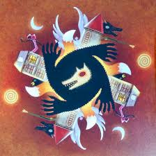
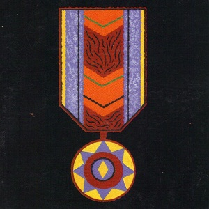
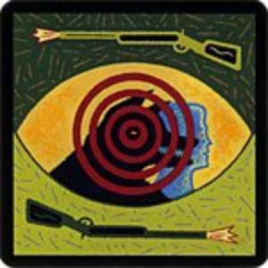
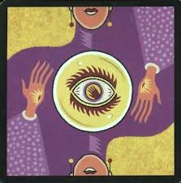
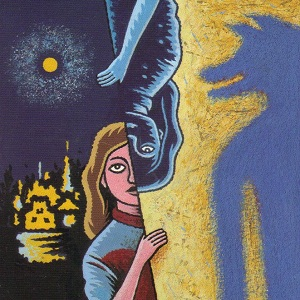

Le loup garou
Son objectif est d'éliminer tous les innocents. Chaque nuit, il se réunit avec ses compères Loups pour décider d'une victime à éliminer... Le jour, ils doivent se comporter comme de simples habitants, participer au débat, chercher des loups, enfin bref, tout faire pour que les soupçons ne se tournent pas vers eux...
Le villageois

Son objectif est d'éliminer tous les Loups-Garous. Il ne dispose d'aucun pouvoir particulier : uniquement sa perspicacité et sa force de persuasion.
La sorcière

Son objectif est d'éliminer tous les Loups-Garous. Elle dispose de deux potions : une potion de vie pour sauver la victime des Loups, et une potion de mort pour assassiner quelqu'un.
Le capitaine
Son vote est décisif lorsque le village à voter et qu'il n'en ressort aucun coupable
Le Chasseur
Son objectif est d'éliminer tous les Loups-Garous. A sa mort, il doit éliminer un joueur en utilisant sa dernière balle...
La voyante
Son objectif est d'éliminer tous les Loups-Garous. Chaque nuit, elle peut espionner un joueur et découvrir sa véritable identité...
La petite fille
Son objectif est d'éliminer tous les Loups-Garous. Chaque nuit, elle peut espionner les Loups-Garous.
Cupidon

Son objectif est d'éliminer tous les Loups-Garous. Dès le début de la partie, il doit former un couple de deux joueurs. Leur objectif sera de survivre ensemble, car si l'un d'eux meurt, l'autre se suicidera.